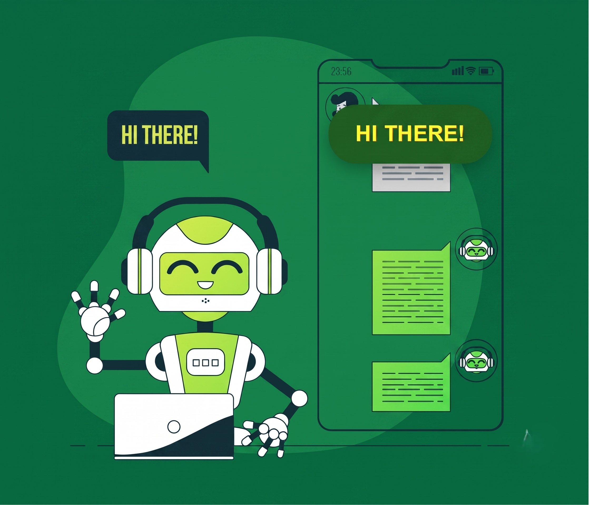

whatsapp for admins
Product workflows
One click for your daily whatsapp actions.
Press the buttons to understand
01
Scan the QR code to connect.
Open Watify, scan once, and confirm the active WhatsApp session before your team starts working.
WhatsApp AuthenticationSession monitor
Disconnected
Scan to connect
Scan to connect
02
Create a group with one tap.
Upload a CSV, paste a list, or add numbers manually. Watify reads the contacts and builds the group without the phone chaos.
Create WhatsApp Group
5 valid numbers detected from CSV
Waiting for group creation.
03
Cleaner view of everything going on.
Search groups, check members, review status, and open what matters from one clean admin view.
| Group ID | Group | Members | Status | Action |
|---|---|---|---|---|
| ID# 101 | June Leads | 24 | Active | |
| ID# 102 | Support Broadcast | 41 | Active | |
| ID# 103 | New Customers | 58 | Active | |
| ID# 104 | Renewal Pipeline | 32 | Active | |
| ID# 105 | VIP Broadcast | 17 | Active |
5 groups loaded.
Select a group
Press View to show leads
- No leads selected yet.
04
Send messages faster.
Pick the recipient type, write once, and send from a focused admin flow instead of repeating the same work in WhatsApp.
How to use Watify
A simple admin path from setup to execution.
- Log inOpen the protected admin dashboard and access WhatsApp workflows.
- Connect WhatsAppScan the QR code and verify the connected phone plus live session health.
- OperateCreate groups, list groups, send messages, and manage subscribers from the dashboard.
- TrackUse analytics to confirm activity, success rate, and subscriber growth.
Too dependent on WhatsApp for your business operations, but it feels redundant? Why not change the interface?
